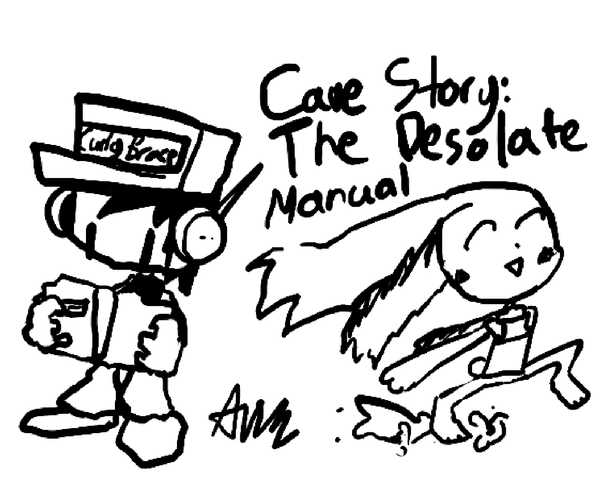

Cave Story: The Desolate
Where you can configure settings and initiate gameplay.

| Move up/down | I/K|Up/Down Arrow Keys |
|---|---|
| Change volume for Music/SFX | J/L|Left/Right Arrow Keys |
| Go forward | Z |
| Go back | X |
Basic controls for most situations in the game.
Note: Jump height is affected by holding down the jump button.
| Move left/right | J/L|Left/Right Arrow Keys |
|---|---|
| Search/Interact | K|Down Arrow Key |
| Jump | Z |
| Fire weapon | X |
| Open inventory | Q |
| Pause | Enter |
| Quit | Backspace |
| Continue conversation | Z |
|---|
Where you can manage your items and weapons that you collect throughout the game.
There are some rules to how the inventory works.
Example: The Vulcan Revolver and Energy Cannon shown in this screenshot can be switched without having to individually move them to their designated sections, because they are from the same section of the inventory.
This means you cannot swap the Machine Gun and Energy Cannon shown in this screenshot, because they are in different sections.
| Personal | Special items that cannot be trashed. Weapons in this section can have their ammo reloaded at a restore point. |
|---|---|
| Items | Normal items that can be trashed. Weapons in this section must have their ammo bought to reload them. Healing items are also located here. |
| Open/Close | Q |
|---|---|
| Select/Place/Consume Healing Item | Z |
| Trash item | X |
Where you buy weapons and items.
| Move cursor | IJKL/Arrow keys |
|---|---|
| Select/Buy | Z |
| Go back | X |
| Pause/Unpause | Enter |
|---|---|
| Quit | Backspace |